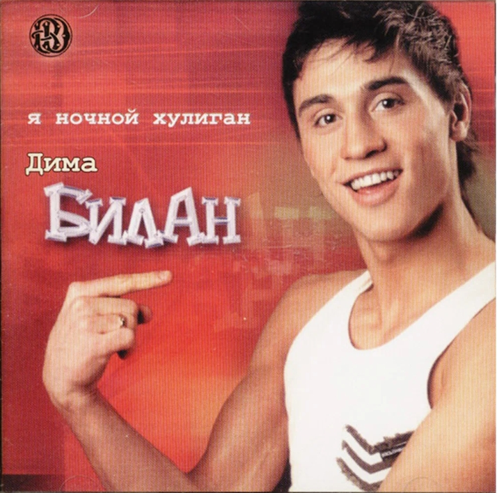

Главная | Общая информация | История | Дискография | Фильмография | Источники | Заказать Диск | Контакты
2003 - Я ночной хулиган

Дебютный студийный альбом Димы Билана, выпущенный в 2003 году.
2004 - На берегу неба
2015 - Не молчи
© Все права защищены. А.Д. Кобелева. ЭФЦ331-1. 2026